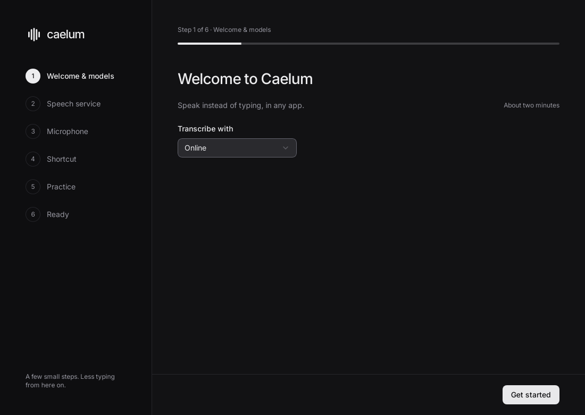

Choose Record
Open Caelum and select Record. A global shortcut is optional.
Record your voice. Finish recording. Copy your words into any app.

Illustrated walkthrough · Sample text, no microphone or clipboard access.
On Home, choose Record. Say “Meet me at noon.”
Choose Finish recording. Wait for the final transcript.
With history on, open the result and copy its text. With history off, the portable workflow copies it directly.
Switch to a document and paste. Example result: “Meet me at noon.”
A simple recording workflow for your Linux desktop. Speak, finish recording, and use your text wherever you need it.
Open Caelum and select Record. A global shortcut is optional.
Choose Finish recording when you’re done. Online mode uses your provider; text cleanup is optional.
Your completed text is ready to copy. Paste it into the app you’re working in and keep going.
Use Record → Finish recording → Copy text. Portal shortcuts are available when your desktop allows them. Wayland is the main path; X11 uses portable mode.
Search your history, teach Caelum your terms, and make the window feel like home.
Record, finish, then copy your transcript. Recent dictations and today’s totals stay within reach.
Interface recreation with sample content. Collapse the app sidebar with Ctrl+B. Tray availability depends on your desktop.
Speech → Microphone → Shortcut → Practice. The microphone test stays on your computer. Online practice uploads only after consent. In the 0.5.0 candidate, local practice uses the downloaded model without a key or upload.
Online transcription uses your provider account. The default is Groq
whisper-large-v3-turbo, with optional Groq
openai/gpt-oss-20b cleanup. You can also configure a
custom provider.
Optional cleanup sends the transcript to your cleanup provider. Their data and pricing policies apply.
On by default, kept for 30 days unless you change it. Audio is never saved to history. History is not encrypted by Caelum.
Official packages fetch signed update metadata when the window opens. GitHub sees your IP and requested asset path, never audio or keys. Automatic checks can be disabled in Settings.
Free and open source. No Caelum subscription.
Online mode uses your own provider account; provider charges may apply.
Linux x86-64 packages. No ARM package.
Check for signed
updates in Settings → System.
Desktop and Wayland acceptance testing is ongoing. See known limitations.
Loading verified release information…
View stable releasesupdate.json metadata.
How updates are verified.Desktop compatibility
Caelum is a Linux app for GNOME, KDE, Hyprland, and other desktops. On GNOME, KDE, and other desktops, use Record / Finish recording / Copy text. Portal shortcuts depend on desktop support. Hyprland also supports native hold-to-talk, the recording pill, and paste into the original app, with clipboard fallback if focus changes. Wayland is the main path; X11 uses portable mode. Desktop acceptance testing is ongoing. For source builds or NVIDIA Wayland troubleshooting, see the Linux technical notes.
Version 0.4.2 requires a network connection for transcription. Starting with the 0.5.0 candidate, choose On this computer and download a compatible model once. You can then dictate offline without a provider key. The stable download selector shows the published version. Preview builds are listed separately on the releases page.
Only Online mode requires credentials. Bring your own Groq API key for that setup, or configure a custom provider. Groq uses whisper-large-v3-turbo for transcription and optional openai/gpt-oss-20b for cleanup. Caelum is free under the MIT license; usage charges come only from your chosen provider.
History is on by default with 30-day retention; both are configurable. Completed transcripts stay locally. Audio is never written to history. History is not encrypted by Caelum. Provider retention and desktop clipboard history apply independently.
Choose dark, light, or system appearance and a Mint, Iris, or Ochre accent. Change your microphone and shortcut in Settings. Ctrl+B collapses the sidebar. Dictionary applies your spoken-term replacements, and Insights shows your dictation totals.
On GNOME, KDE, and other desktops, copy the completed text and paste it where you want it. Hyprland integration can paste into your original application; changing focus falls back to the clipboard. App behavior can vary.